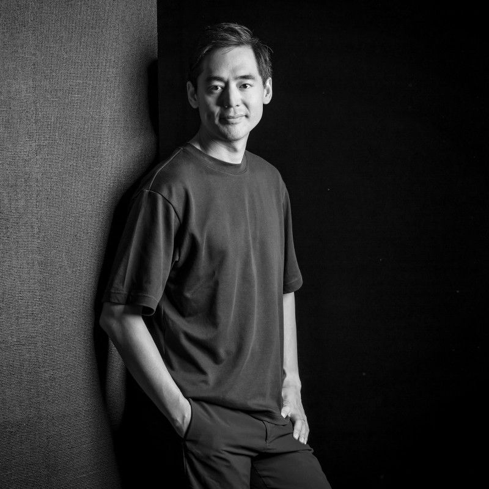
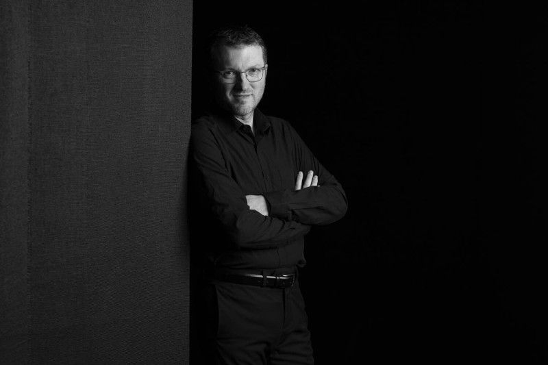
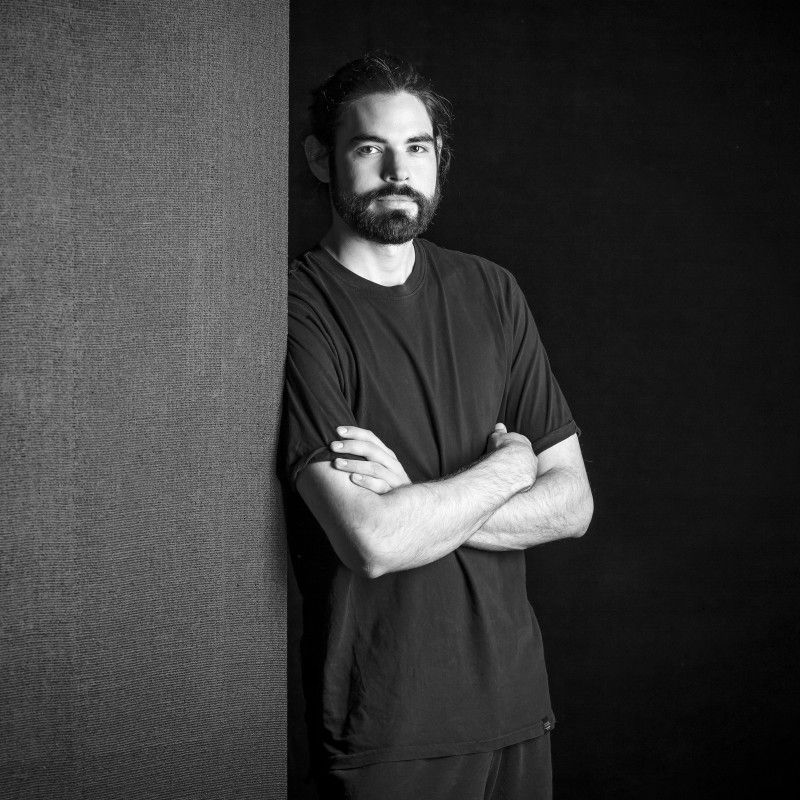
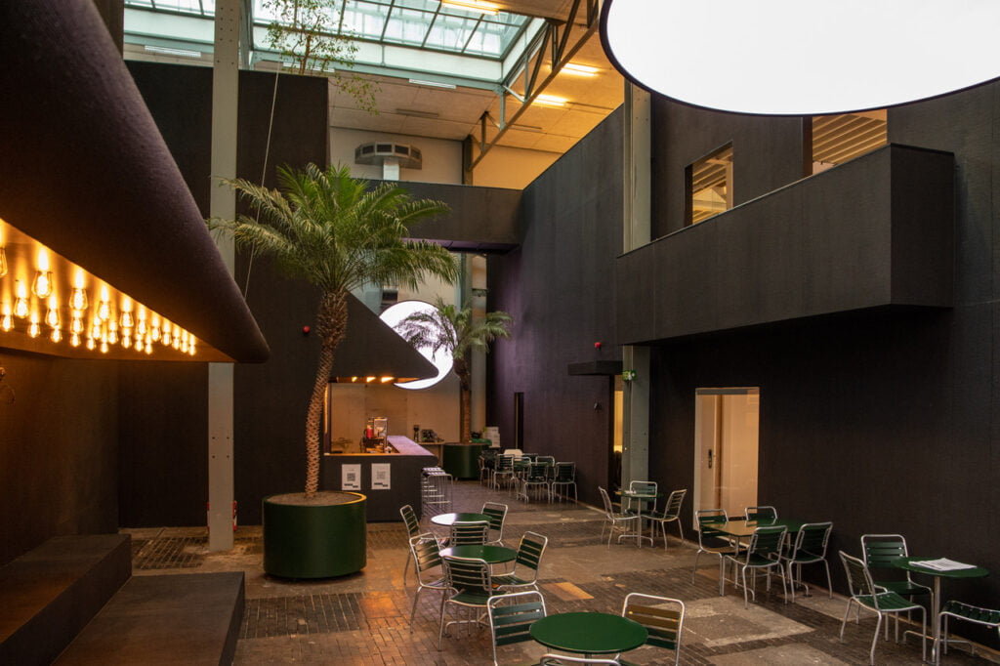

Home of creators
Le lieu où l'on crée, produit, apprend et se rencontre.
Downtown Studio occupe 1500 m² au 10 rue des Vieux-Grenadiers, à Genève, à la même adresse que le MAMCO. On y trouve des salles de post-production, un plateau de tournage, des bureaux, et les studios et indépendants qui y travaillent.
Un lieu et quatre portes
Tout repose sur le lieu et sur ceux qui y travaillent. On y entre par l'une des quatre portes, selon ce qu'on vient faire. Chaque élément de la maison a une seule place sur le plan.
Les maisons en détail
Depuis 2004
Fondation de Freestudios SA, rue Gourgas à Genève. La société prend le nom de Downtown Studio SA en avril 2024.
Freestudios lance Downtown Studio, centre d'expertise dédié aux industries audiovisuelles, au 10 rue des Vieux-Grenadiers.
Création de l'association Progress au sein de Downtown Studio, en novembre.
Inauguration officielle du lieu, le 26 septembre.
En décembre, la Fondation Portail des Nations confie à Downtown Studio la direction créative de Together.
[À VALIDER : mention de Magnetic validée par son comité (association indépendante fondée par Downtown Studio et Headfun)]
Ce qui est né ici et vit ailleurs
Deux associations indépendantes, avec leurs propres sites. Le site de Downtown les présente et renvoie vers elles.
L'association de formation continue aux métiers de l'audiovisuel, créée en novembre 2023 au sein de Downtown Studio, qui l'héberge.
[À VALIDER : mention de Magnetic validée par son comité (association indépendante fondée par Downtown Studio et Headfun)]
Une charte éthique sur l'intelligence artificielle
Downtown Studio s'est doté d'une charte éthique sur l'usage de l'IA, datée du 29 octobre 2026. [À VALIDER : contenu et publication de la charte éthique IA de Downtown Studio (29.10.2026)]
L'équipe de Downtown
Les métiers de l'image et du son sont ceux des résidents. Voir les résidents →









Quatre verbes
Downtown Studio met en commun ses salles et son matériel, et réunit ceux qui s'en servent.
On y transmet son métier et on y teste les techniques qui arrivent dans la profession.
Avec qui la maison travaille
La Fondation genevoise pour la formation professionnelle et continue finance les formations de Progress, dont Progress AI.
Elle a financé la salle de cours de Progress et ses équipements.
Le fonds incitatif genevois rembourse jusqu'à 30 % des dépenses de post-production. Conditions →
Les écoles de cinéma dont viennent les jeunes professionnels du programme Lift.
Ils en parlent
Kit presse : [À VALIDER : kit presse téléchargeable (logos, photos, texte de présentation)]
Contact presse : [À VALIDER : adresse et contact presse]
Passez prendre un café
Le café de la maison est ouvert aux membres et à leurs invités.

